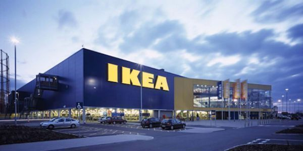

| Inicio | Quiénes Somos | Catálogo | Detalle | Contacto |
|
|  |
IKEA Murcia celebrará del 16 al 21 de mayo el decimoquinto aniversario la llegada de IKEA a España y el quinto desde que abrió su primera tienda en la capital de la Región, con ambiente festivo en la tienda y devolviendo a sus clientes el 10 por ciento de las compras en una tarjeta regalo, según informaron fuentes de esta empresa en un comunicado. De los 16 millones de visitantes recibidos por la tienda de IKEA desde su apertura en 2006, el 52 por ciento provienen de la Región de Murcia, el 28 por ciento de Alicante, el 16 por ciento de Valencia y el resto de provincias limítrofes, como Almería o Albacete. El entusiasmo con el se ha acogido a IKEA en Murcia se refleja también en el alto número de socios de 'IKEA Family', el club de fidelización de la compañía, que ya cuenta con más de 230.000 miembros. En estos 5 años, los visitantes de IKEA Murcia han mostrado sus preferencias por determinados productos de diseño de IKEA, y un posible ranking de los objetos IKEA 'favoritos' de los murcianos estaría encabezado, entre otros, por el diván HEMNES, el sofá ERKTOP y el armario PAX. IKEA intenta evitar el uso de productos químicos y sustancias que puedan resultar dañinas para las personas y el medio ambiente. IKEA apoya la nueva legislación REACH de la UE sobre productos químicos, que se ajusta al enfoque preventivo que da IKEA al uso de dichos productos. Todos los productos IKEA de todos los mercados de todo el mundo deben cumplir las restricciones relativas a los productos químicos que recoge la legislación REACH. A la hora de desarrollar un producto, primero pensamos en el precio que el artículo tendrá cuando se venda en las tiendas IKEA. No obstante, nuestra voluntad de ofrecer precios bajos no nos lleva nunca a comprometer la calidad ni la seguridad de los productos IKEA. Nuestros diseñadores, desarrolladores de productos y técnicos tienen en cuenta la seguridad, la calidad y el impacto medioambiental en todo el ciclo de vida del producto. IKEA tiene el claro objetivo de reducir, con el tiempo, el impacto medioambiental de toda nuestra gama. Utilizamos diferentes herramientas y procesos para garantizar la mejora de todas las fases del ciclo de vida de los productos: materia prima, fabricación, distribución, uso y final de vida útil. IKEA apuesta por el uso de menos recursos para fabricar los mejores productos, sin que tenga un impacto negativo en su funcionalidad ni apariencia. Las principales materias primas usadas en los productos IKEA son la madera, el algodón, el metal, el plástico, el vidrio y el ratán. Además, intentamos usar tantos materiales reciclables y renovables como sea posible. |
Transporte Gratis
Ikea Business